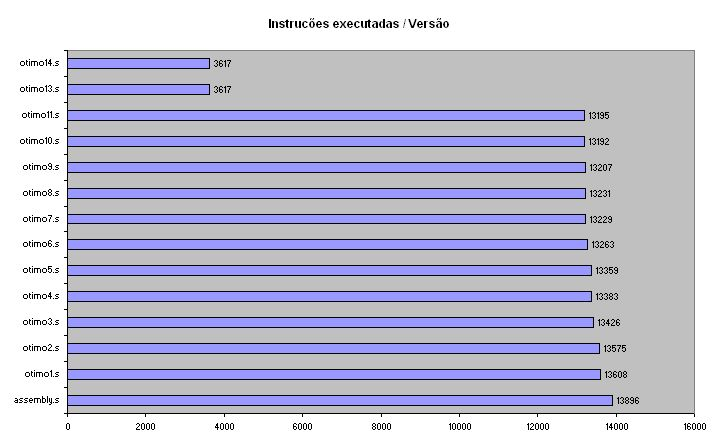

| < |
Indice |
> |
UFRN - DIMAP - Engenharia de Computação
|
Terceira avaliação de Software Básico
Otimização do código assembly gerado na segunda
avaliação.
[Gráfico
de Instruções]
Gráfico mostrando a quantidade de instruções executadas antes de finalizar a execução em cada versão de implementação.
